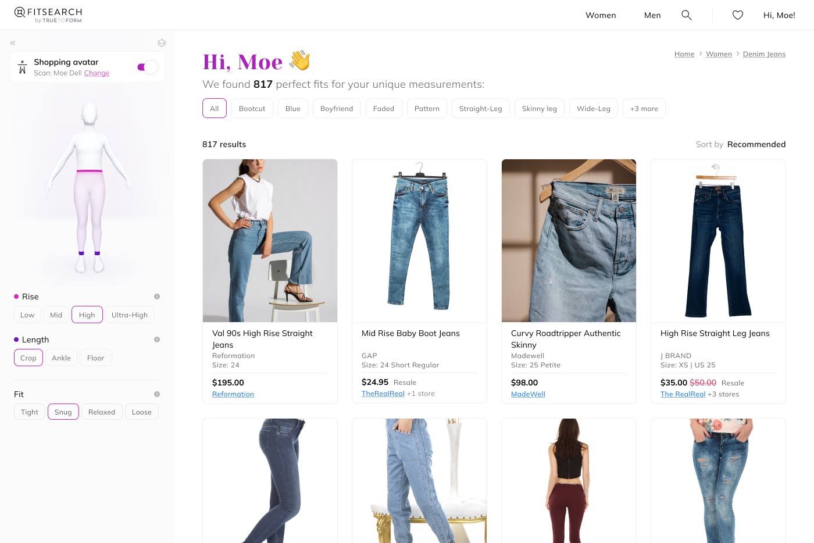
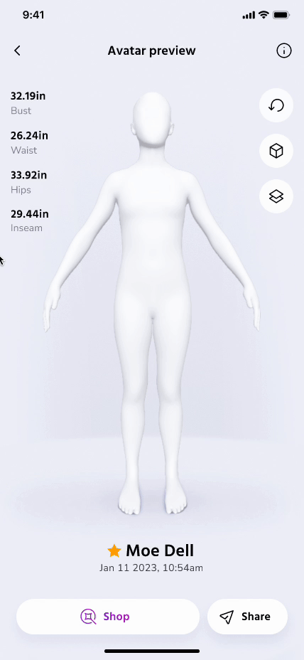

Let’s Talk
While most of TrueToForm's solutions are B2B, FitSearch is its consumer product: a search engine that pairs with a shopper's TrueToForm avatar to find garments that actually fit. It collects garment design files from merchant sites, directly and indirectly, and returns highly accurate fit predictions. As lead designer, I owned the UX, research, design, and launch planning.
Lead designer
UX, research, design, and launch planning
CEO, CTO, a full-stack engineer, and 2 interns
33 affiliate contracts signed since launch
500+ sign-ups after a feature in The Hustle

Tons of user interviews, analyses, and testing revealed that one of the biggest user frustrations with online shopping was their inability to find garments that fit their, what most participants mentioned as, uncommonly "odd" forms. Fitsearch removes a large barrier of shopping anxiety by only showing shoppers what WILL fit.
On a business side, Fitsearch is free for brands to post their clothing on, which is a great opportunity to acquire new customers and raise conversions. Not to mention drastically reduce waste and return costs.

Shoppers connect their scan avatars to Fitsearch to find garments that will fit them perfectly.
We started with women's denim jeans with intent to grow into different garment types once we complete testing with market placement and revenue trials.
User's TrueToForm accounts give them access to all TrueToForm products(designer solution suite upon plan purchase), which is a great way to keep one repository of user data on the engineering side.
An account isn't required, but with one, users can assign a profile avatar from their scan app, which will automatically connect to Fitsearch when logged in.
That being said, and being an new consumer product, its obvious most consumers wont start with a TrueToForm account, and thus, no premade avatars to connect.
Creating avatars via scans using the scan app is preferred, but scanning alone was a big blocker for users, as it took more effort than what's usually needed for a casual shopping experience. Shoppers needed other methods.
Working with leadership, we decided to provide a lower barrier to entry method for creating an avatar. Although less accurate, users can create an avatar by filling out a quick one minute fit survey, which generates avatars based on others with their similar data.
Not only does this remove a ton of cognitive load for users, its a great way to subtly increase user trust and thus, more willingness to take a scan.
One of the primary values of Fitsearch is its symbiosis with TrueToForm to generate fit evaluations, which visualizes how a garment will fit you in detail. Fitsearch uses TrueToForm's fit prediction widget, which was originally designed for the Designer solutions suite.
Having to stay cheap, we couldn't build a robust search for the mass amounts of garment styles and fits. I created a quick solution for filtering results using common key words scraped from hundreds of merchant sites. A shopper's match results will then be bucketed into their related key word category. If users want to get more specific, the general search can search for any term within a garment's description.
Chances of increased traffic, reduced return rates, and customer trust have gained the interest of brands and merchants.
Interest in Fitsearch landed us a feature in the Hustle: Using AI for the perfect fit.